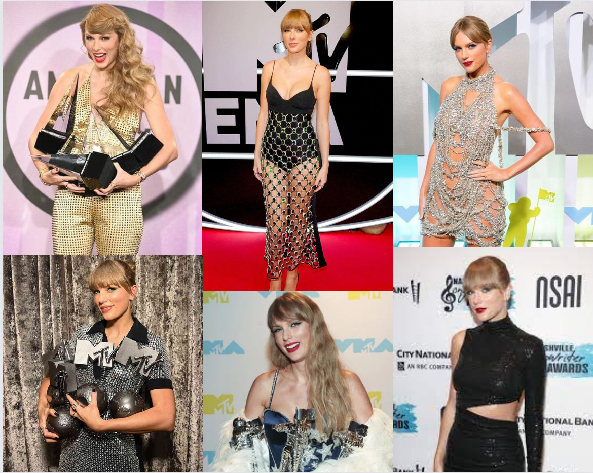
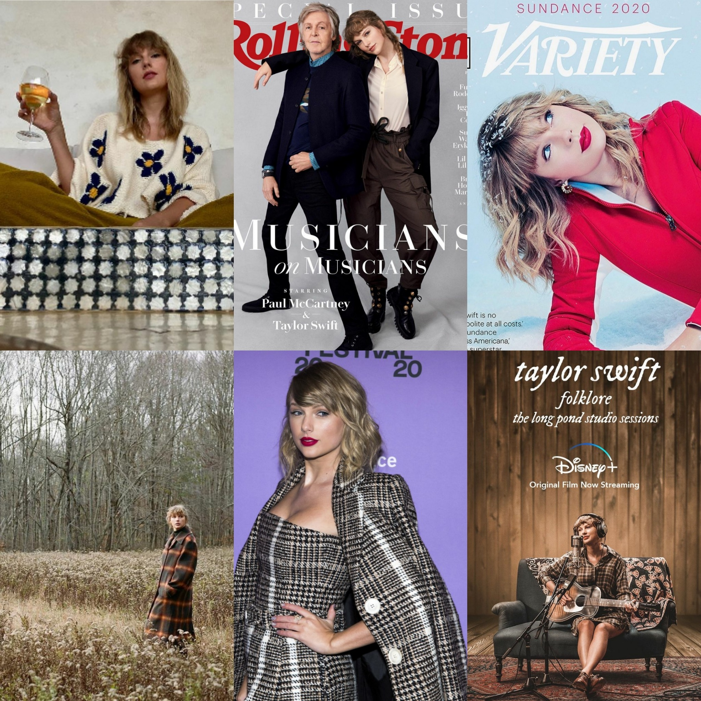
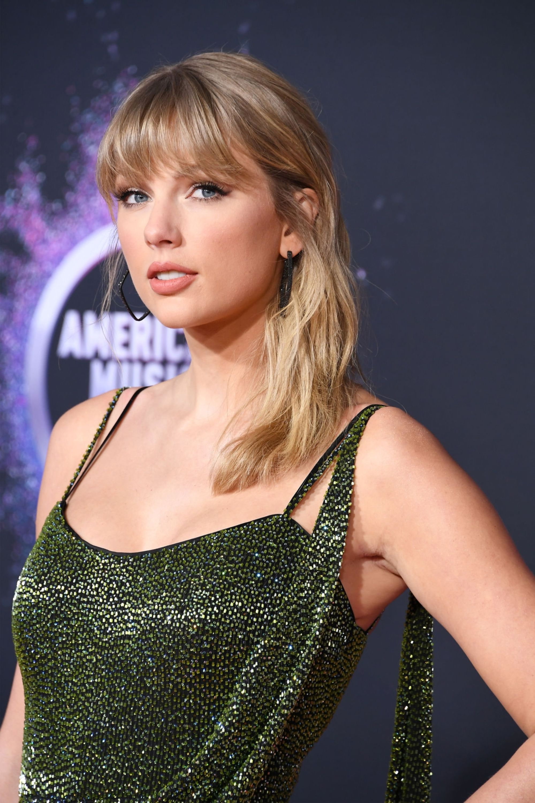

PREMIOS 2021
Mejor Artista Internacional - ARIA AWARDS
Mejor Artista Femenina Pop - AMAS
Mejor Album Pop - AMAS
Mejor Artista Estadounidense - MTV EMA
Canciones Ganadores Betty - BMI
Canciones Pop Ganadoras Lover, The Man - BMI
Artista Internacional del Año - JOOX
Icono de la Composición - INMPA
Gran Premio Especial o Variado folklore:the long pond studio sessions - GRACIES
Mejor Videoclip Familiar The Best Day (taylor´s version) - CMT MUSIC AWARDS
Album Pop del Año folklore - I Heart Music Awards
Mejor Artista Femenina - Billboard Music Awards
Mejor Artista Billboard 200 - Billboard Music Awards
Diez Canciones que Componen cardigan, willow - NSAI
Premio Icono Global - BRIT AWARDS
Salón de la Fama de Occidente (Western Hall of Fame), Reyes de Estrellas - Weibo Starlight
Awards 2021
Mejores 3 Albumes (Occ.) folklore - The Japan Gold Disc Award
Album del Año folklore - GRAMMY 2021
Artista del Año - GOLDDERBY
Mejor Artista Pop - GOLDDERBY
Album del Año folklore - GOLDDERBY
Grabación del Año cardigan - GOLDDERBY
Canción del Año cardigan - GOLDDERBY
Artista Global Más Influyente - TMEA

PREMIOS 2020
Premio Icono de Actitud - Attitude
Artista del Año - AMAS
Mejor Artista Femenina Pop/Rock - AMAS
Mejor Videoclip cardigan - AMAS
Compositor del Año - Apple Music
Canción de Banda Sonora del Año Only the Young - People Choice Awards
Album Internacional del Año folklore - DMA
Temas humanos más atractivos de un documental Miss Americana - Critics Choice
Diez canciones que Componer Lover - NSAI
Mejor Dirección The Man - VMA
Mejor Cancion de Occidente ME! - HITO
Canciones Pop Ganadoras ME!, You Need To Calm Down - BMI
Mejor Documental Miss Americana - MIDSEASON AWARDS
Premio Vanguardia - Glaad
Mejor Dirección Artística Lover - The Webby Awards
Cantante Global Favorita - Kids Choice Awards
Album Pop del Año - I Heart Music Awards
Artista Global de 2019 - ifpi
Mejor Solista del Mundo - NME

PREMIOS 2019
Mujer de la Década - Billboard Women in Music
Mejor Artista Internacional - ARIA AWARDS
Artista de la Década - AMAS
Artista del Año - AMAS
Artista Femenina Pop/Rock - AMAS
Artista Adulta Contemporanea - AMAS
Album Pop/Rock Favorito Lover - AMAS
Videoclip Favorito You Need to Calm Down - AMAS
Top 50 Canciones Country Babe - BMI
Premio Pop End Game - BMI
Compositor del Año - BMI
Canciones Pop Ganadoras - BMI
Album del Año Lover - People Choice Awards
Mejor Artista Estadounidense - MTV EMA
Mejor Videoclip ME! - MTV EMA
Mejor Videoclip de Artista Femenina Internacional - VMAJ
Videoclip del Año - VMA
Videoclip por una Buena Causa - VMA
Mejores Efectos Visuales - VMA
Premio Icono - Teen Choice Awards
Canciones Ganadoras - I Heart Radio Music Awards
Mejor Videoclip - I Heart Radio Music Awards
Gira del Año - I Heart Radio Music Awards
Cantante Global Favorita - Kids Choice Awards
Premio a la Trayectoria en Giras (Milestone Award) - ticketmaster
Mejor Gira Pop - PollStar Awards